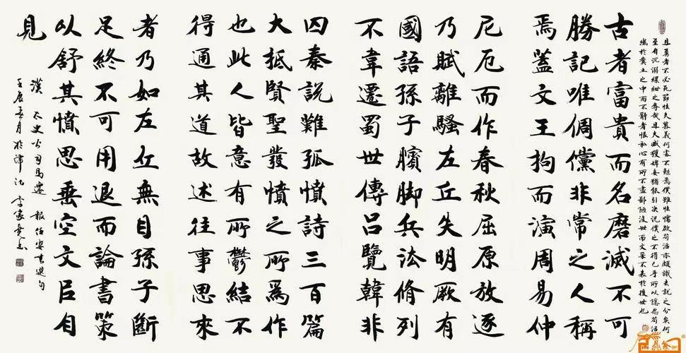
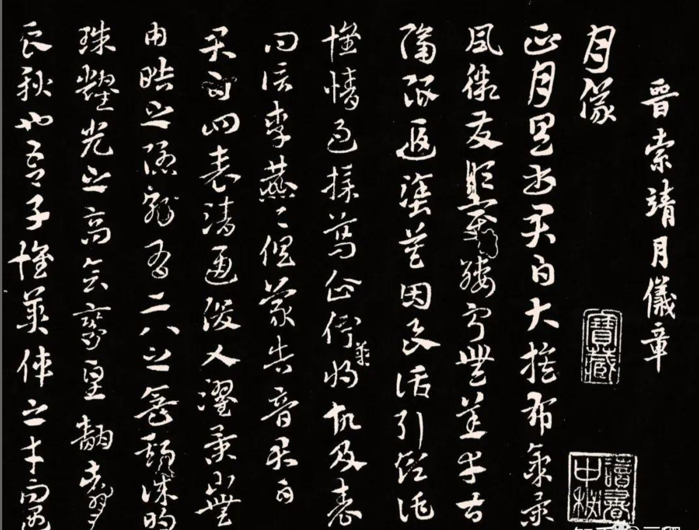
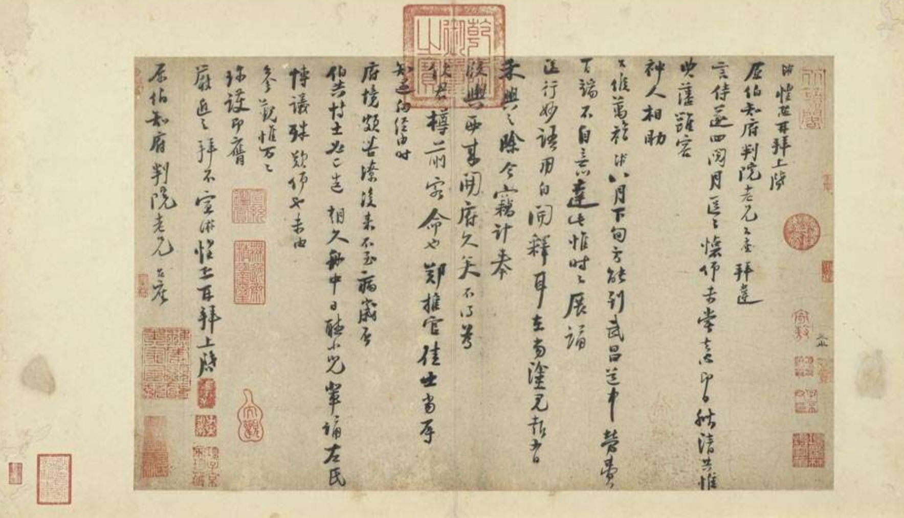
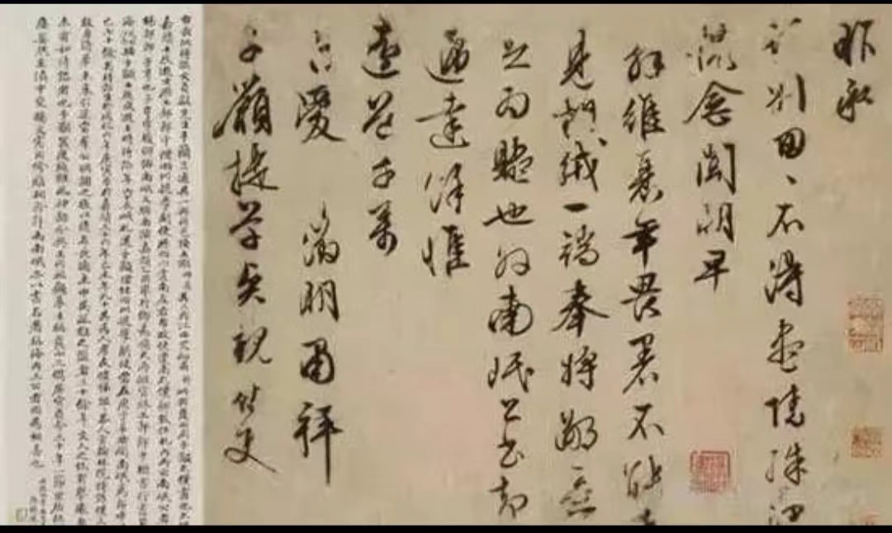
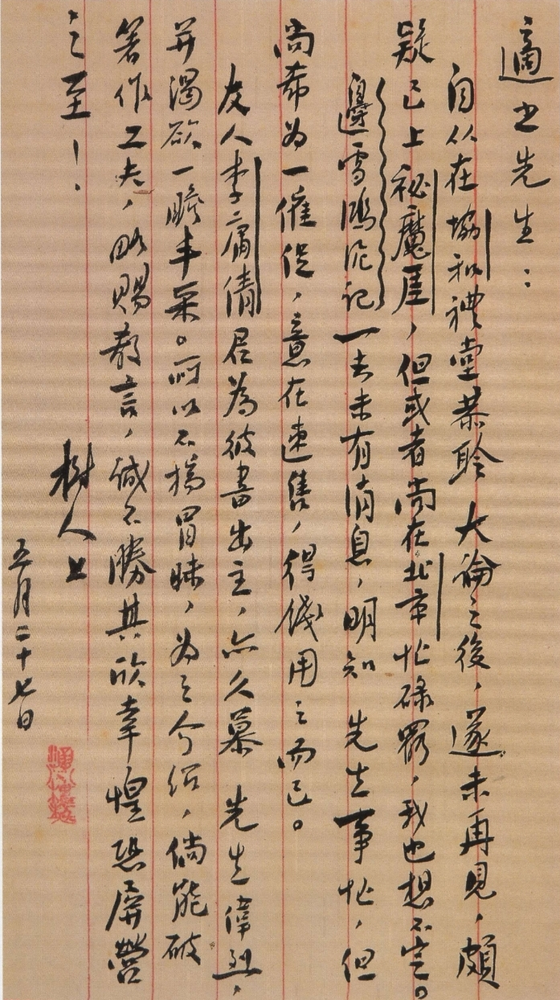

海内存知己，天涯若比邻
--书信里的真挚友情
一、《报任安书》（司马迁）
两汉一新旧制，开创了书信发展的新纪元，书信从公函国书中摆脱出来，真正成为抒发个人情感的工具。
《报任安书》是司马迁写给朋友任安的回信，主要内容有：
1. 司马迁表达了因受宫刑而无法履行任安所托的“推贤进士”的请求。
2. 叙述了自己因辩护李陵而受宫刑的经过，表达了对李陵的同情。
3. 陈述了自己忍辱负重，坚持完成《史记》的决心。（节选内容）
4. 抒发了个人遭受屈辱的愤懑和对未来的期望。
5. 对任安说明了自己无法救援任安的苦衷，并表达了对任安的歉意。

节选内容：
古者富贵而名摩灭，不可胜记，唯倜傥非常之人称焉。盖文王拘而演《周易》；仲尼厄而作《春秋》；屈原放逐，乃赋《离骚》；左丘失明，厥有《国语》；孙子膑脚，《兵法》修列；不韦迁蜀，世传《吕览》；韩非囚秦，《说难》《孤愤》；《诗》三百篇，大底圣贤发愤之所为作也。
节选内容感悟：天将降大任于斯人也，必先苦其心志，劳其筋骨。司马迁向友人表述心志：尽管自己遭受了宫刑的屈辱，但并不能使自己屈服，而是要发愤著书，创作出像前人那样的伟大著作。
二、《月仪帖》（索靖）
魏晋南北朝，是书信繁荣的黄金时期。索靖的《月仪帖》，开创了一种新的书信往来形式，“月仪帖”成为朋友间每月互通讯问沟通感情，增进友谊的一种信件

部分内容：
正月具书君白：大蔟布气，景风微发，顺变绥宁，无恙幸甚！隔限遐涂，莫因良话，情过采葛，企伫难将，故及表问,信李藨藨，俱蒙告音，君白。
君白：四表清通，俊乂濯景，山无由皓之隐，朝有二八之盛，斯诚明珠耀光之高会，鸾皇翻翥之良秋也。吾子怀英伟之才，而遇清升之祚，想已天飞，奋翼紫闼，使亲者有迩赖也。君白。
三、《致原伯知府判院》（陆游）
唐宋是书信发展的鼎盛时期，这一时期的书信，不仅有广度的发展，而且有纵深的渗透，书信成了人们生活中不可或缺的一部分。

原文：
游惶恐再拜，上启原知府判院老兄台座：拜违言侍,遂四阅月，区区怀仰，未尝去心。即日秋清，共惟典藩雍容，神人相助，台候万福,游八月下旬方能到武昌。道中劳费百端，不自意达此。惟时时展诵送行妙语，用自开释耳。在当途见报，有禾兴之除。今窃计奉版舆西来，开府久矣。不得为使君樽前客,命也！郑推官佳士，当辱知遇。向经由时,府境颇苦僚。后来不至病岁否？伯共博士必已造朝久，舟中日听小儿辈诵《左氏博论》，殊叹仰也。未由参觐,惟万万珍护，即膺严近之拜，不宣。游惶恐再拜，上启原伯知府判院老兄台座。
通过这封书札，我们能够感受到陆游与曾逢之间超越了一般社交往来的深厚友情，这种友情建立在相互尊重、共同兴趣和长时间的情感积累之上。
四、《与子吁书》（文徽明）
明清时期，政治上专制，文化上实行恐怖主义政策，使书信发展罩上了阴影，落于低潮。

原文：
昨承话别，匆匆不得尽情，殊深愧念。闻明早解维，衰年畏暑，不能走见，绒一端，奉将鄙意，不足为赆也。外南珉公书，却烦递达。馀惟远道，千万自爱。徵明肃拜。子吁提学贤亲侍史。
这封书信表达了对友人即将远行的不舍，以及解释自己因年老不能送别，特赠礼物，并拜托好友要事。整封书信虽内容、格式同那一时期的其他书信般，略显拘束，但不难发现其流露出的朋友间的真挚情感，尤其是对即将远行的友人的依依惜别和相互珍重之情。
五、鲁迅与胡适书信往来
近代，白话书信兴起，书信发展迎来又一高潮。

鲁迅和胡适的书信往来主要集中在1920年代，这个时期的鲁迅和胡适都在积极推动中国的文化和教育改革。他们的书信内容涉及到了文学、历史、哲学等多个领域，反映了他们对当时社会问题的看法和态度。